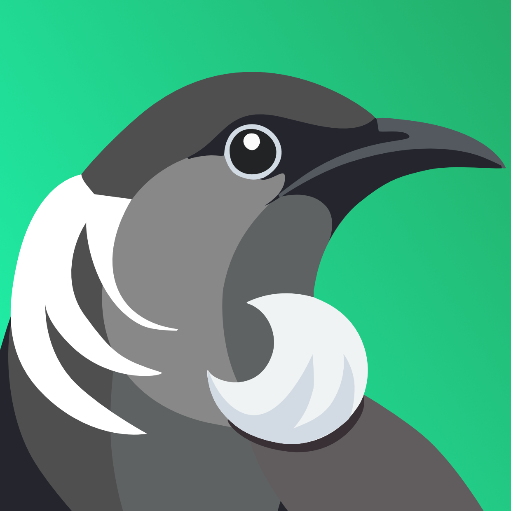
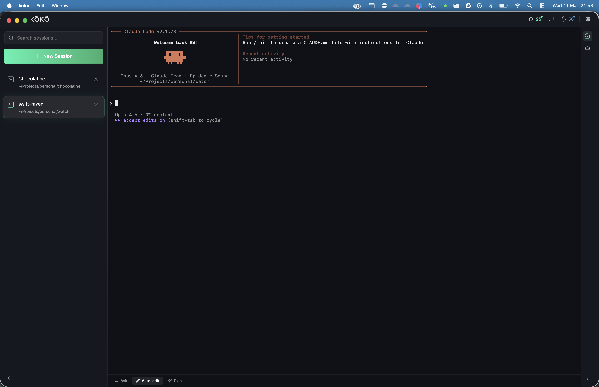
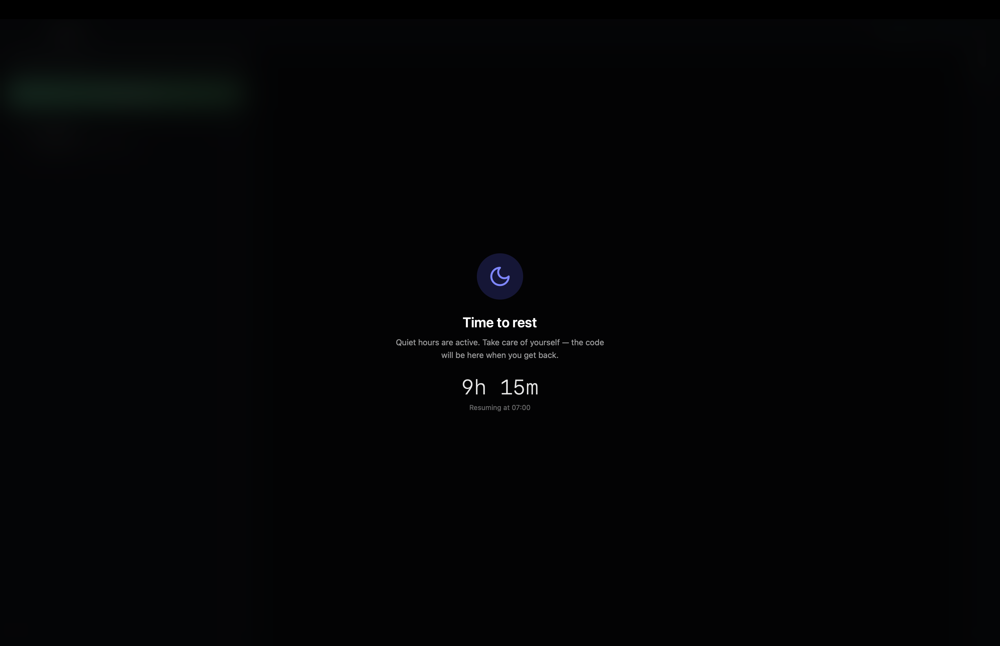

A desktop workspace for Claude Code. Run multiple sessions side-by-side with GitHub, Slack, and git awareness — all in one window.

Launch named sessions in any directory. Claude Code's full interactive TUI renders natively — slash commands, tool approvals, keyboard shortcuts all work.
See open PRs across your repos with review status. Approve and merge directly from the sidebar. Notifications with quick mark-as-read.
Unread direct messages at a glance. Click to deep-link into the Slack app. No more tab switching to check if someone messaged you.
Live git diff for the active session's directory. Staged files in green, unstaged in orange. See what Claude is changing as it works.
Watch Claude's spawned child processes in real time. See what tools and subagents are running, how long they've been active, and their process trees.
Press Cmd+` to slide up a zsh shell for quick commands without leaving your Claude session. Prompt history persists across toggles.
Dark navy theme with frosted glass panels, mesh gradient backgrounds, and mint accents. Designed for extended terminal use without eye strain.
Quiet hours block the app during off-hours with a full-screen overlay and countdown. Break reminders with a circular timer nudge you to step away on a configurable cycle.
Cmd+N new session, Cmd+W close, Cmd+1-9 switch tabs. Sessions persist across restarts and reconnect automatically.

Set a time window — say 23:00 to 07:00 — and Kõkõ blocks access with a full-screen overlay. A countdown shows when work resumes. No sneaky "just five more minutes." The code will be there in the morning.
Configure a work/break cycle (90 min work, 15 min break). When the timer fires, a visual overlay with a circular progress ring encourages you to step away. Skip if you're in flow — you'll be reminded again next cycle.
Download for macOS or Linux. Windows support coming later.
Kõkõ launches Claude Code for you. Make sure it's installed:
npm install -g @anthropic-ai/claude-code
Wails v2 — a Go backend connected to a React frontend in a native webview.